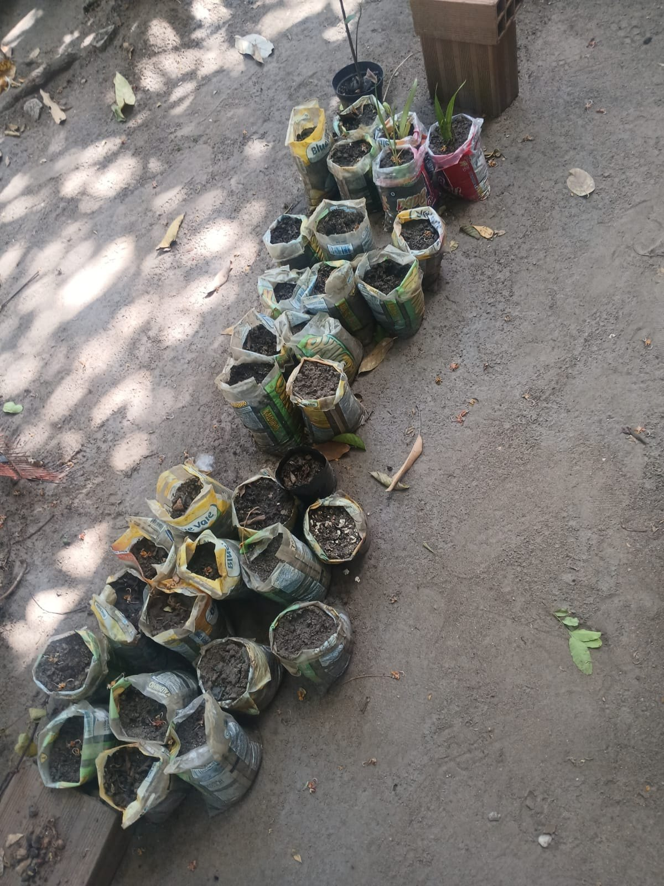
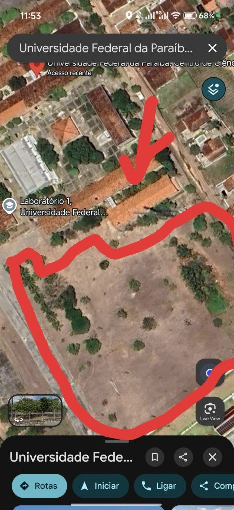

Pomar Pedagógico
Pomar PedagógicoHistória do Pomar
Da criação do espaço às atividades no Campus IV da UFPB.
Como o projeto ganhou forma
A proposta
O professor Paulo Roberto Palhano Silva elaborou a proposta da emenda que viabilizou o Horto Pedagógico. O material da atividade registra uma emenda de R$ 270 mil e aprovações nos programas UFPB em Seu Município e PROBEX.
A árvore nº 70
O CCAE anunciou o plantio da árvore nº 70 na programação comemorativa dos 70 anos da UFPB. Leia a notícia do CCAE.
Extensão universitária em 2026
O edital do programa UFPB em Seu Município prevê o plantio de 500 mudas frutíferas, ornamentais e nativas e ações com universitários, escolas públicas, aldeias Potiguara e comunidades tradicionais. Consulte o edital de extensão (PDF).
Plantio e visita de escolas
Segundo Wellando Costa, já houve plantio de espécies nativas e uma aula de campo com estudantes da rede municipal sobre manejo de mudas e práticas agroflorestais.
O Pomar em implantação



Onde fica o Pomar
CCAE, Campus IV da UFPB · Estrada Engenho Novo, s/n, Mamanguape–PB.
- Seta vermelha
- Local onde ficam as mudas prontas e as que ainda estão sendo preparadas.
- Contorno vermelho
- Área maior prevista para receber as mudas.
